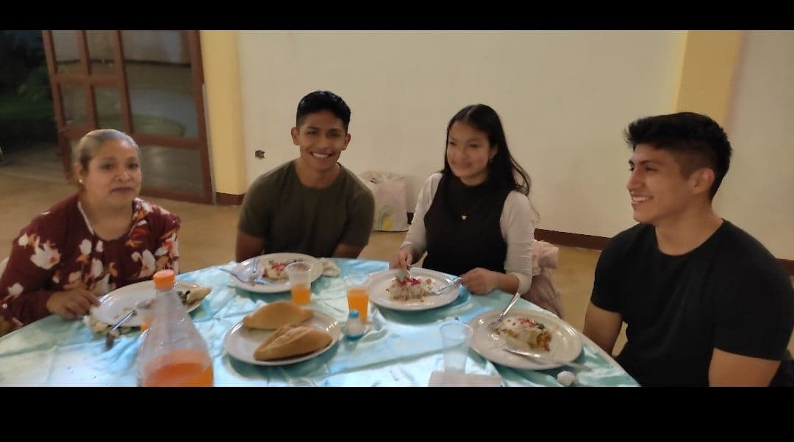
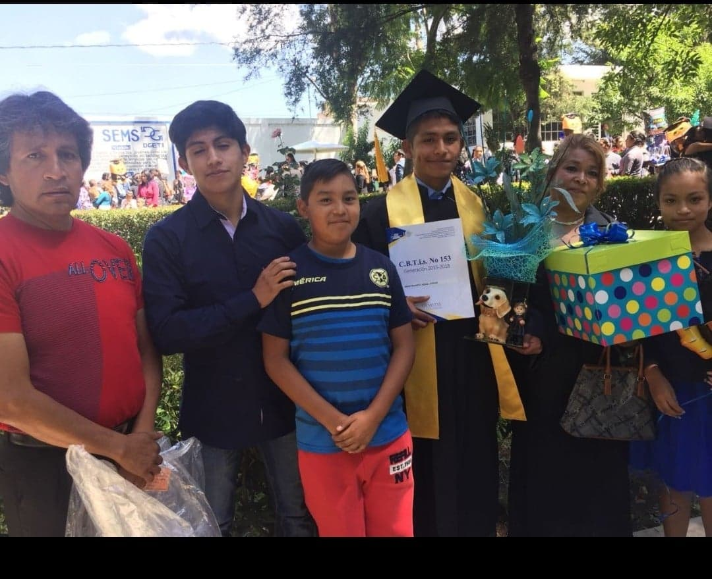

Mi familia esta conformada po 5 integrantes:
Mi papa Claudio isaac Mastranzo Calvario: mi padre es una persona muy seria, me cuesta mucho interactuar con el,es uana persona algo perfecionista, mo es mucho de salir, por lo regular trabaja se queda en casa, cuenta que en su juventud fue muy fiestero que por esa razon siente que ya no esta para fiestas, le gusta canatar(nos conto que gano un par de premios en concursos de canto) es muy fanatico de la piolitica le gustan mucho las plantas y los perritos.
Mi mama Heriberta Abad Mendez: Mi madre es casi lo contrario a mi papa, es uan persona muy alegre, es menos estricta pero mas regañona le gusta bailar mucho, cantar, es muy activa, le gusta estar ocupada todo el dia.

Mi hermano Miguel Anguel Mastranzo Abad:
Es el hermano mediano, actualmernte estudia la universidad igual en el ITP estudia mecanica, pasamos la etapa de la niñes juntos, es algo serio, le gusta muchio el rock, metallica y rammstein en especial dejamos de hablarnos por un tiempo por que nos distanciamos por la escuela, ultimamente emos salido mucho, creo que ya perdi os el distanciamiento.
Mi hemana Vanessa Mastranzo Abad:
Es la hermana menor, acaba de entarar al bachiller, es muy alegre pero aveces es seria, le gusta los perritos,y no es mucho de salir
